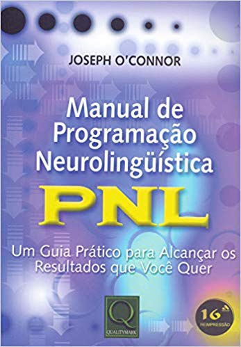
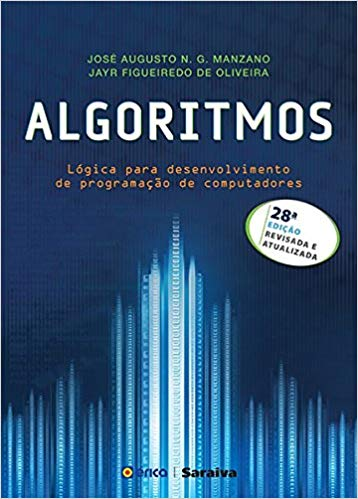
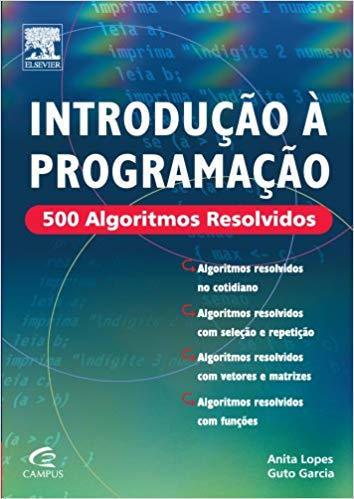
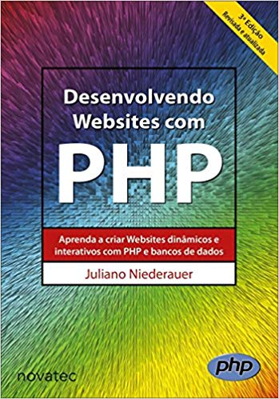

 |
Manual De Programação
Autor: Joseph O'Connor
Neste livro você encontrará clareza, didática, inteligência, abrangência e simplicidade com profundidade, praticidade e facilidade de leitura. Joseph O'Connor apresenta, com estilo direto, a PNL de uma forma compreensível e aplicável à vida pessoal e profissional. é um excelente livro para quem deseja conhecer a PNL e também para aqueles que já trabalham com ela, pois é prático, dinâmico e abrangente. Para auxiliar os leitores, o livro apresenta uma série de exercícios e práticas para serem usados no dia-a-dia. |

|
Construindo Aplicações Web
Autor:André Milani
A construção de sites e aplicações cresce de forma acelerada na internet e, por trás de grande parte desses projetos, o PHP e o MySQL são utilizados por serem tecnologias muito eficientes e terem sido criados visando este nicho de mercado: aplicações web (intranet e internet). Com a capacidade de criar códigos de forma simples e rápida, o PHP é uma linguagem de programação extremamente funcional, com recursos voltados para web e em constante evolução. Por ser uma das tecnologias mais utilizadas em aplicações de internet, diversas bibliotecas e módulos são criados e disponibilizados para uso de programadores todos os dias. Além disso, há outro fator importante: é gratuito e, ao ser integrado com o MySQL, gera um ambiente perfeito e completo para o desenvolvimento de aplicações. Este livro traz todos os passos necessários para conhecer e utilizar o PHP e o MySQL por meio de exemplos práticos, partindo do básico, para quem não teve ainda nenhum contato com tais tecnologias, ensinando ao leitor desde a linguagem de programação e a modelagem de banco de dados até seu uso avançado por meio de construção de exemplos, servindo como um guia de referência para programadores e desenvolvedores. Os códigos-fonte deste livro são baseados na versão 7 do PHP, incluindo a nova classe PDO para conexão com bancos de dadostd>
|
|  |
Alhoritimos
Autor:Jayr Figueiredo de Oliveira e José Augusto N. G. Manzano
A obra aborda aspectos históricos, como origem, fundamentação, breve análise da programação estruturada em comparação com a programação orientada a objetos, resumo dos termos usados e discussão sobre polimorfismo versus poliformismo. Trata também de classe, objeto, atributo, método, herança e encapsulamento, com alguns exemplos de aplicação para auxiliar a compreensão. Nesta vigésima oitava edição, foram acrescentados a implementação de um exemplo de uso de matriz em estilo dinâmico e o exemplo d o programa calculadora codificado na linguagem de programação D. É indicada a estudantes de programação de computadores interessados em aprender e usar técnicas de programação com foco na norma ISO 5807:1985. |
|  |
Introdução a Programação
Autor: Carlos Assis
Esta obra é indicada para um público iniciante em programação imperativa de computadores e para todos os estudantes que estão tendo dificuldades de aprender algoritmos pelo método tradicional. O objetivo deste livro é apresentar 500 exercícios resolvidos para que o aluno possa então se familiarizar com uma nova linguagem, entendê-la e a partir daí, começar a achar suas próprias soluções. O livro possui conceitos teóricos sobre algoritmos de uma forma bem rápida e resumida.Introdução à programação está dividido por assunto e organizado em 6 grandes blocos: * o primeiro, abrange algoritmos do cotidiano; * no segundo, somente algoritmos que usam funções, comando de atribuição, de entrada e saída; * no terceiro bloco, o comando de seleção; * no quarto bloco, os comandos de repetição; * no quinto os algoritmos que manipulam vetores e matrizes e, no sexto, algoritmos utilizando função.No apêndice foram incluídos problemas de raciocínio lógico e uma ferramenta para testar os algoritmos no computador. |
|  |
Desenvolvimento de Web Sites
Autor: Juliano Niederauer
Desenvolvendo Websites com PHP apresenta técnicas de programação fundamentais para o desenvolvimento de sites dinâmicos e interativos. Você aprenderá a desenvolver sites com uma linguagem utilizada em milhões de sites no mundo inteiro. O livro abrange desde noções básicas de programação até a criação e manutenção de bancos de dados, mostrando como são feitas inclusões, exclusões, alterações e consultas a tabelas de uma base de dados. O autor apresenta diversos exemplos de programas para facilitar a compreensão da linguagem. |
|